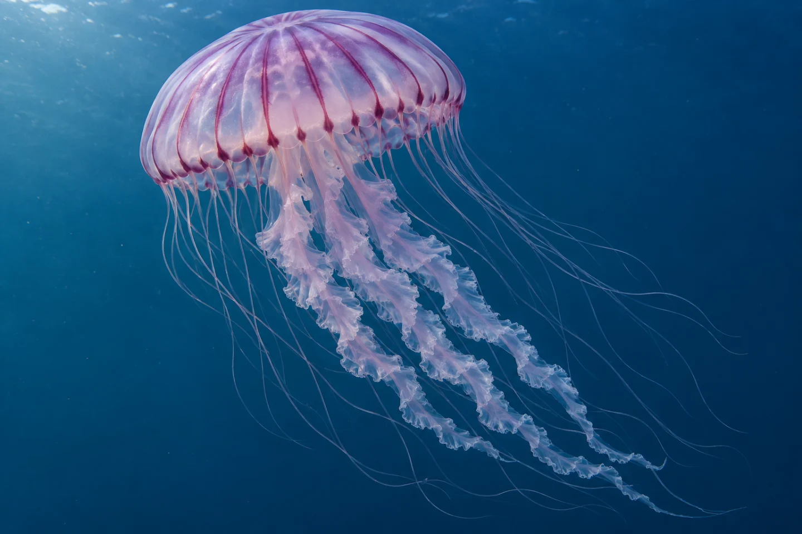

Пурпурнополосая медуза.
Когда купол сокращается, длинные щупальца тянутся за ним и расправляются в потоке воды.

Как узнать
У взрослой медузы светлый купол с тёмно-пурпурными радиальными полосами. Под ним тянутся тонкие щупальца и ротовые лопасти.
Где встречается
Эта медуза живёт в открытых водах у побережья Калифорнии. На коротких отрезках она движется за счёт сокращений купола, а дальше её несёт течение.
Сведения о виде · Monterey Bay Aquarium.